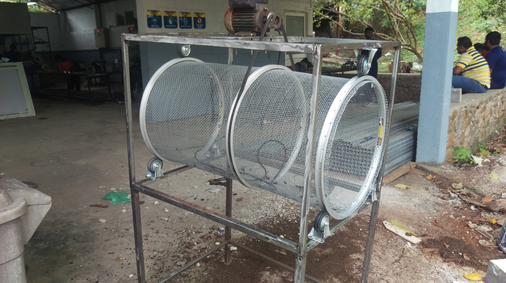
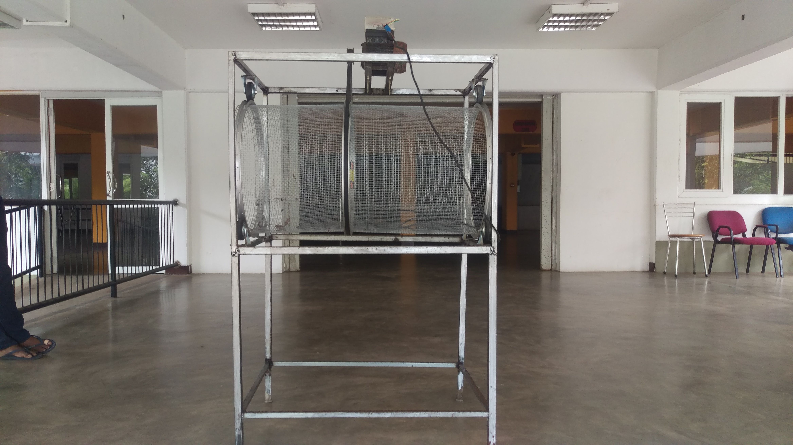
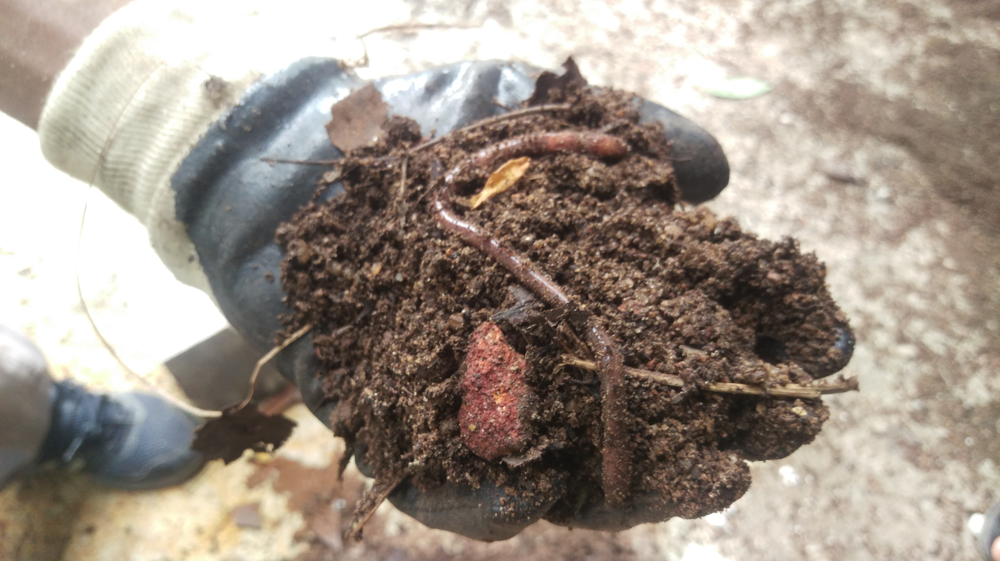
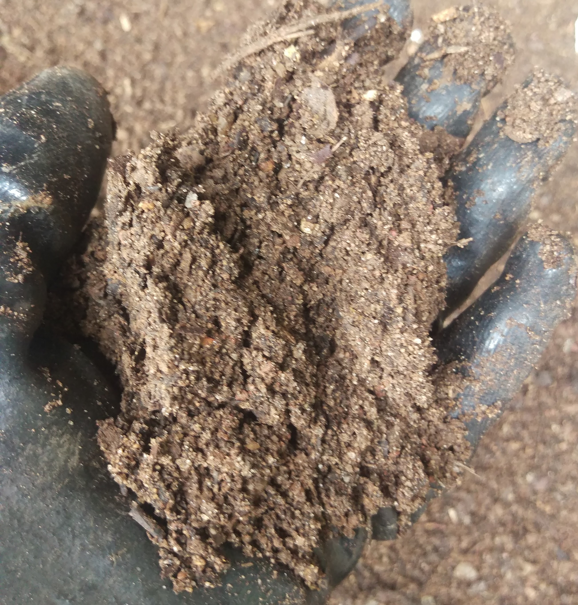
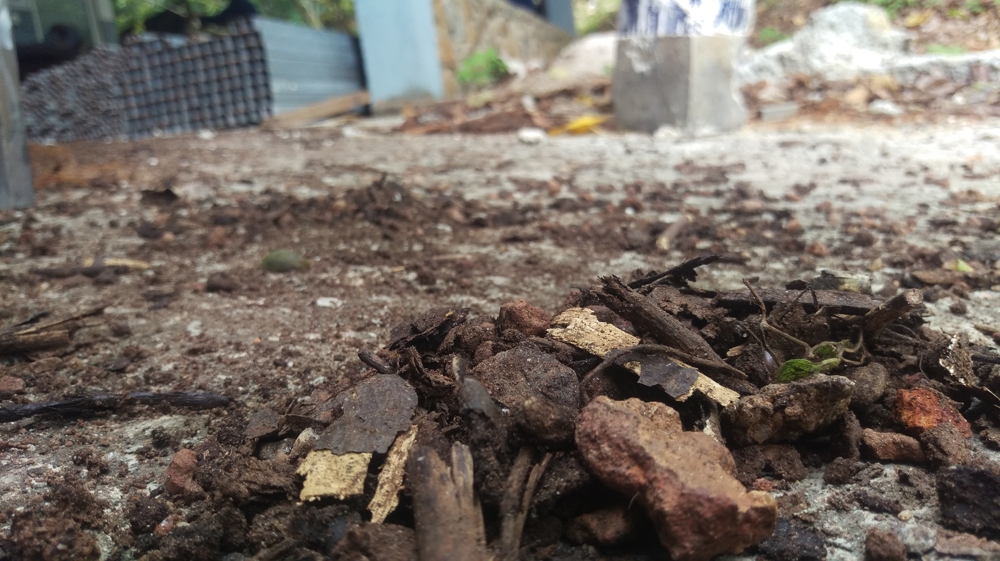
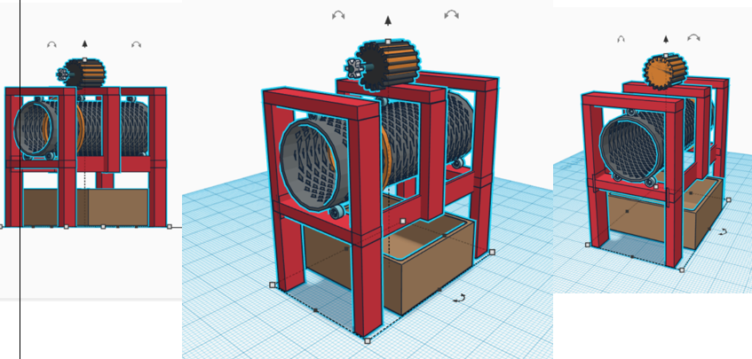
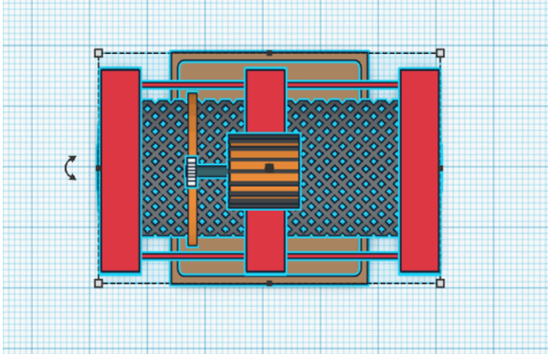

Amila Alexander
The Projects in 2018
2018 Projects
Find more projects on my GitHub Page!
Find more on GitHubIndustrial Manufacturing Project : Compost Sifter
April 2018
The conception, design and manufacturing of a compost sifting machine which can be used to filter fine grain soil and remove debris from common soil. It works by spinning a meshed drum via a motor to 'sift' raw soil with debris to obtain filtered soil which can readily be used to compost plants.
Technologies Used: HTML, CSS, Bootstrap, Git, Flask, Google App Engine

Prototype Design

Single Motor Driven

Unfiltered Soil

Filtered Soil

Removed Debris
Project Sketches
Sketching and CAD were completed via simple online tools prior to learing SOLIDWORKS
Technologies Used: HTML, CSS, Bootstrap, Git, Flask, Google App Engine

Primitive sketches before SOLIDWORKS

via Online modelling tool